Префектура Миэ · Исэ · напитки
Крафтовая кола Исэ: имбирь с собственного поля и старинное лекарство паломников
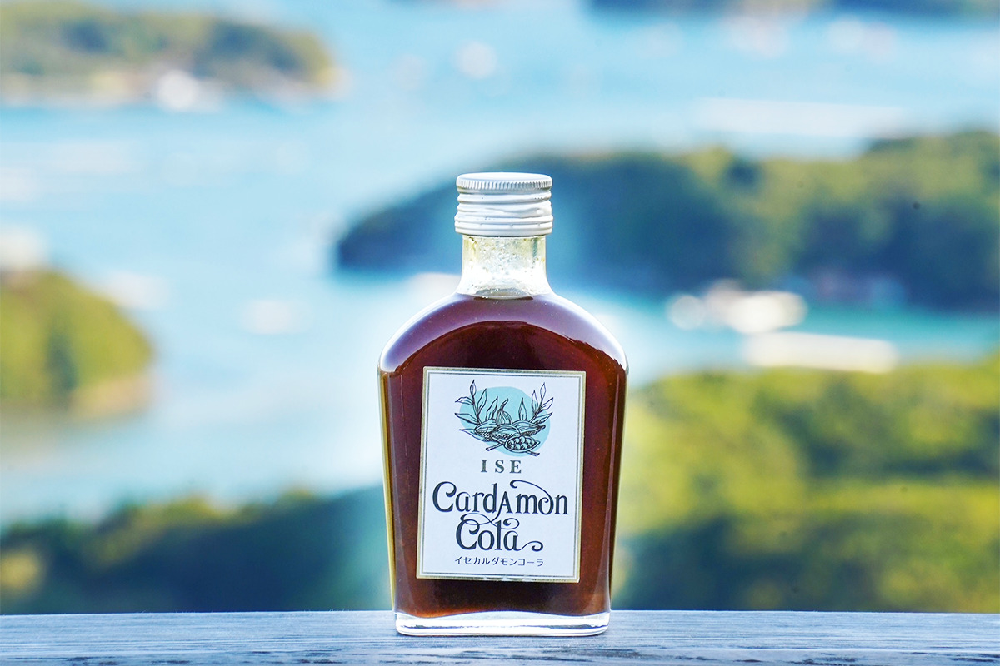
Крафтовую колу в Японии варят из того, что растёт рядом, и поэтому каждая бутылка немного рассказывает о месте. В Исэ, городе у святилища Исэ-дзингу, таких бутылок две: одна выросла из заброшенных полей, другая из пилюль, которые паломники несли домой ещё в эпоху Эдо.
Исэ
Кола у ворот святилища
Исэ на востоке префектуры Миэ живёт вокруг святилища Исэ-дзингу. Одно из его божеств, Тоёукэ-но омиками, отвечает за пищу, и город с давних пор связан с едой, урожаем и здоровьем. Неудивительно, что именно здесь появились две крафтовые колы, которые делают не ради сладости, а ради пряностей, трав и местных продуктов.
Обе продаются в виде сиропа. Его разводят газированной водой или молоком, добавляют в блюда и десерты, и у каждой бутылки за спиной своя история.
ISE Cardamon Cola
Кола, которая выросла на поле
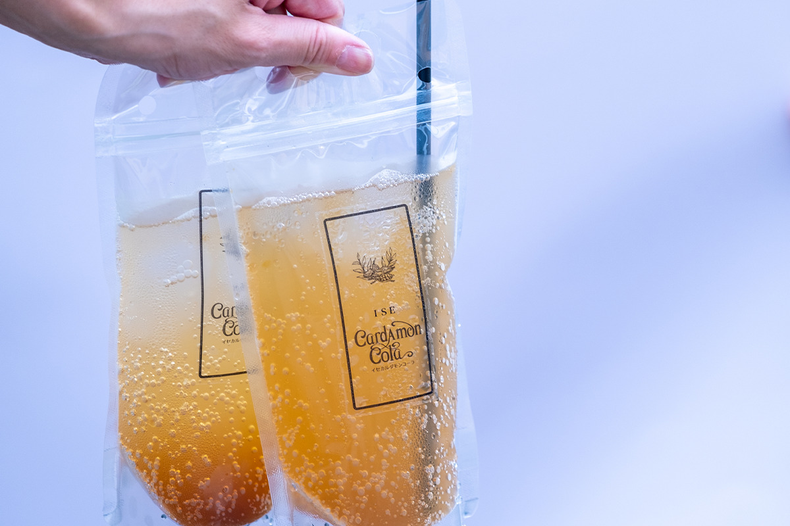
ISE Cardamon Cola придумали в компании из префектуры Миэ, которая выпускает товары для пожилых людей и людей с ограниченными возможностями. Её глава часто бывал в Исэ и замечал две вещи. Пожилые люди, которые работают на земле, здесь удивительно бодры. И при этом всё больше полей вокруг города стоят заброшенными.
«Я хочу, чтобы люди становились здоровее от того, что едят и что выращивают»
глава компании
Так появилась идея: возделывать поля и возвращать силы и людям, и округе. Вместе с сотрудниками глава компании стал искать, что именно выращивать. Решение подсказал один из них: имбирь и острый перец, которые в Японии издавна считают лекарственными растениями, а из них сварить крафтовую колу.
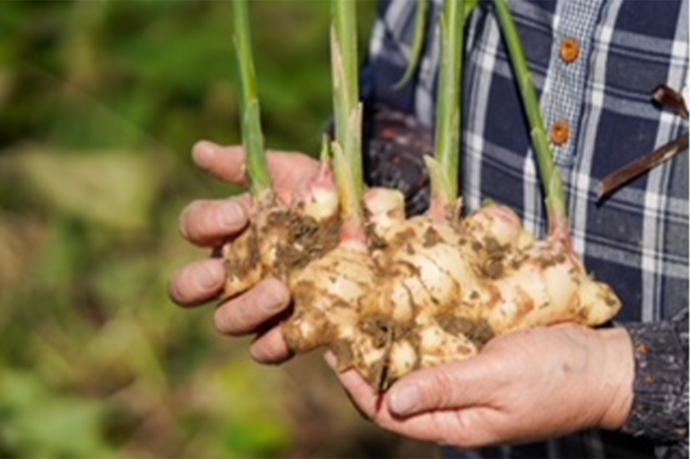
Для опытов компания взяла свой участок в районе Мисоно в Исэ, около 260 квадратных метров. Пробовали разные культуры, и после многих попыток имбирь и перец для колы удались.
В сироп идут 13 пряностей и свежие цитрусы. Из городка Михама, известного своими фруктами, берут лимон Мейера с мягкой кислинкой и сладкий цитрус декопон. К ним добавляют кардамон, который называют королевой пряностей, редкую ваниль в стручках и тростниковый сахар кибидзато с мягкой сладостью. Красителей, консервантов и ароматизаторов нет, поэтому пить такую колу может кто угодно. Глава компании хочет расширять поля, собирать больше урожая и давать работу местным жителям.
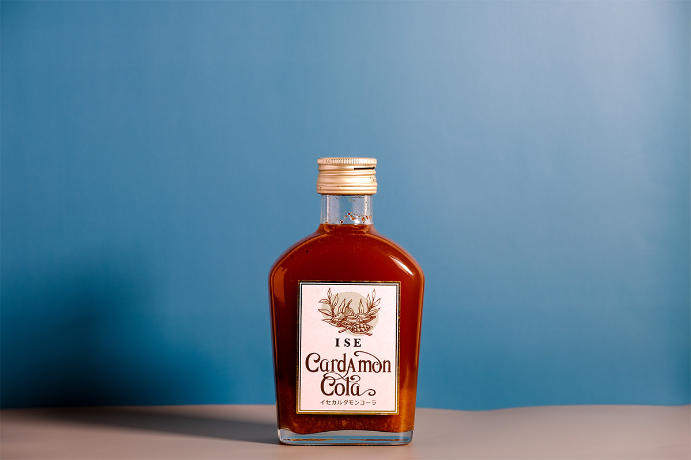
Пить колу просто: в стакан со льдом наливают одну часть сиропа и три или четыре части газированной воды. С горячим молоком получается мягкий напиток в духе чая масала. А если потушить в сиропе свиные рёбрышки или грудинку, мясо станет мягким, а пряности дадут ему яркий акцент.
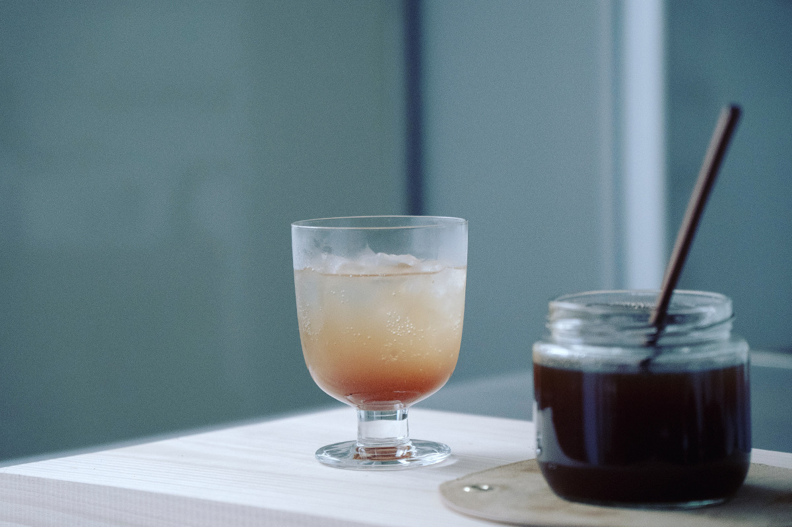
ISE Cardamon Cola
- Цены / Вход
- 1620 иен с налогом за бутылку 200 мл (концентрат)
Манкин-кола
Кола из пилюль паломников
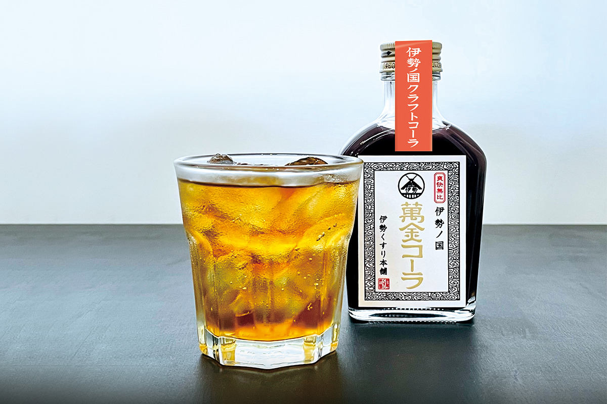
Многие японцы помнят «манкинтан» с детства: маленькие горькие пилюли с сильным запахом трав, которые принимают, когда болит живот. Лавка традиционных лекарств «Исэ кусури хомпо» ведёт свою историю с 1570 года, а само лекарство в Исэ знают около 600 лет.
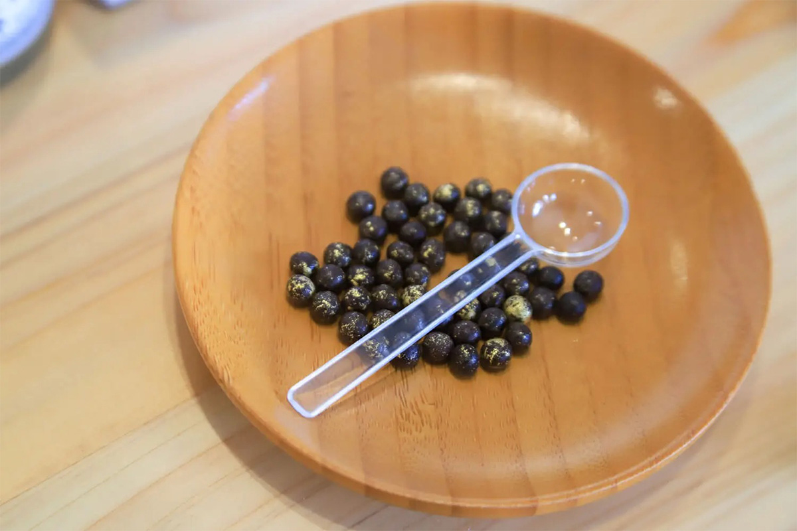
Слава к «манкинтан» пришла в эпоху Эдо, когда вся страна потянулась в паломничество о-Исэ-маири. Пилюли почти ничего не весили, приносили настоящую пользу и стали удобным подарком из поездки. Путники носили их в коробочках для лекарств как дорожный оберег. О «манкинтан» говорят в классических рассказах ракуго и в популярном историческом телесериале, а значит, его знала вся Япония. Для простых людей лекарства Исэ веками были опорой во время болезни, и их делают до сих пор.
Нынешний глава лавки представляет 24-е поколение семьи и с детства собирался продолжить семейное дело. Он окончил фармацевтический факультет, учился в США и Китае, потом работал в крупной торговой компании и лишь затем пришёл в семейное дело. Однако в 2004 году прежняя семейная фирма из-за плохих дел перешла к другому владельцу.
Тогда он вспомнил, что у семьи был свой сад лекарственных трав. Решив вернуться к истокам и рассказать о возможностях японских целебных растений, он сам основал «Исэ кусури хомпо». Традицию здесь берегут, но придают ей форму, понятную молодым, и передают дальше: так, меняясь со временем и не забывая начала, живёт многое в японской культуре. Из этой мысли и родилась «Манкин-кола».
Состав
Тёмный сахар и десять трав
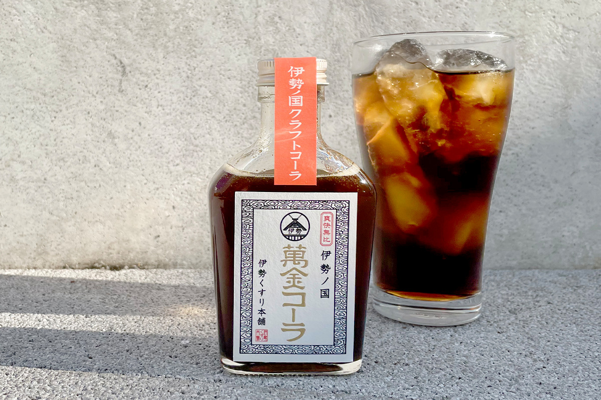
Полное название напитка «Исэ-но куни Манкин-кола», то есть «Манкин-кола из страны Исэ». Это сироп из отборного чёрного сахара и десяти японских и китайских лекарственных растений, задуманный как напиток, в котором чувствуется дух старинного лекарства. Среди трав есть и главные составляющие самого «манкинтан»: катеху, солодка, корица и гвоздика. Пряную свежесть трав уравновешивает густой вкус чёрного сахара.
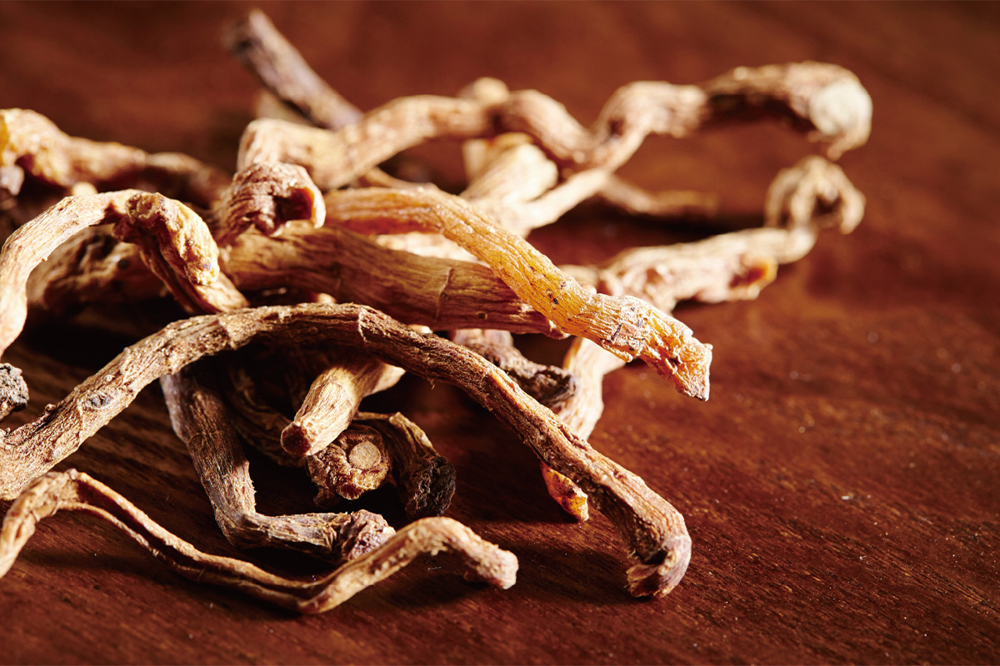
Консервантов, ароматизаторов и других химических добавок в сиропе нет. Светлый сахар санонто и чёрный сахар медленно уваривают вместе с травами, всё делают вручную, поэтому сироп выпускают ограниченными партиями. Его разводят газированной водой, горячим молоком или алкоголем, а если полить им йогурт, получится десерт. Пить его можно круглый год: летом холодным, зимой горячим.
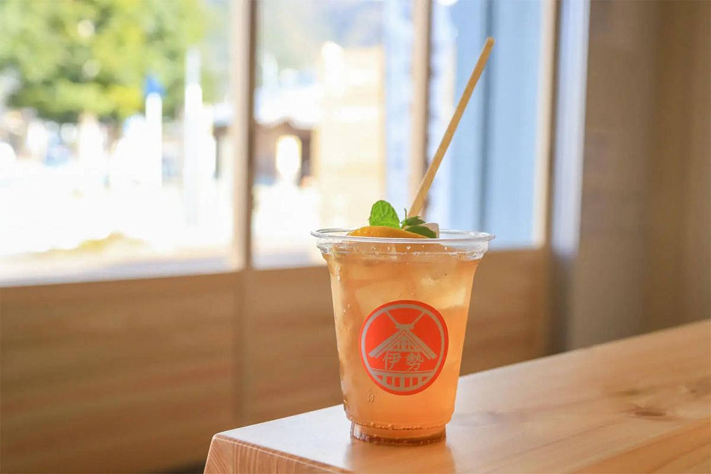
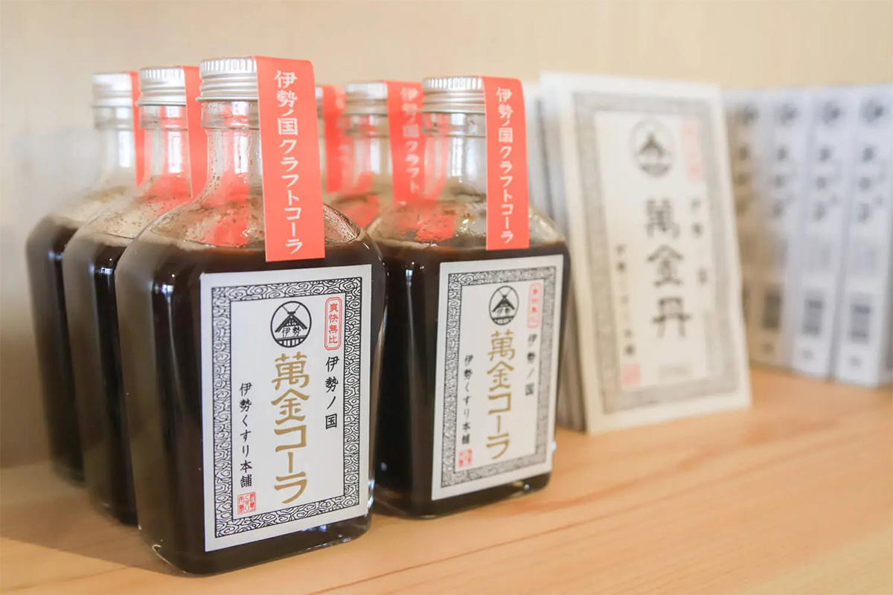
Старое лекарство паломников теперь можно попробовать в стакане. А заодно представить путников эпохи Эдо, которые шли в Исэ и обязательно увозили домой коробочку «манкинтан».
«Манкин-кола», лавка «Исэ кусури хомпо», магазин в Охараи-мати
- Адрес
- префектура Миэ, Исэ, Удзи-имадзайкэ-тё, 44
- Телефон
- +81 120-646-770
- Часы работы
- 9:30–16:00
- Выходные
- без выходных
- Цены / Вход
- 1500 иен за бутылку 150 мл
- Сайт
- isekusuri.co.jp